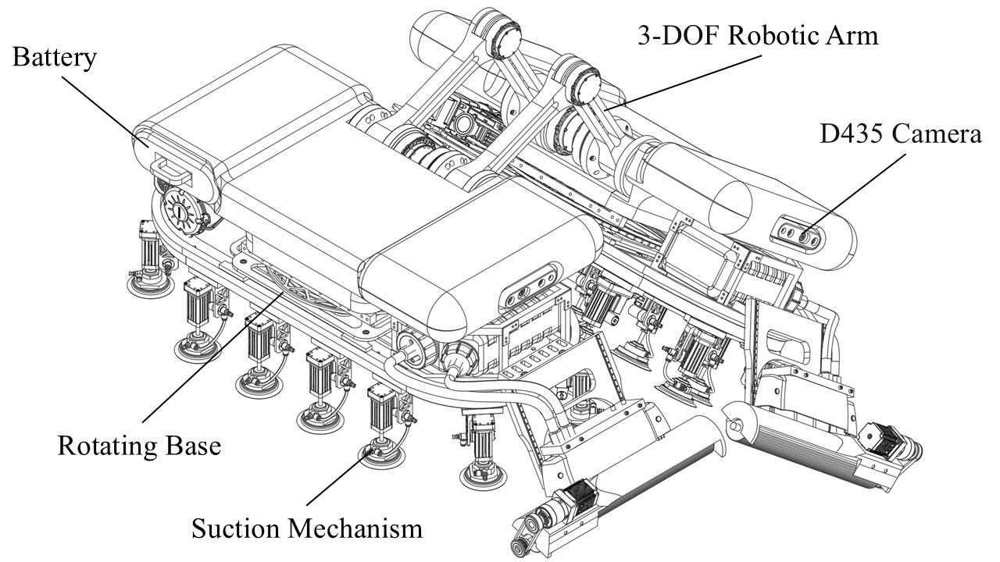

Hi! I am Xiaoyu Liu 刘晓煜, a senior undergraduate student at Wuhan University of Technology (WHUT), majoring in Measurement and Control Technology and Instruments. I have been admitted to Beihang University (BUAA) for a Master's degree in Electronic Information, starting Sep. 2026. My experience spans robotic navigation, autonomous driving systems, and embedded hardware development.
Detailed Profile (详细个人介绍)
Hi！我是刘晓煜，武汉理工大学测控技术与仪器专业本科生，现已推免至北京航空航天大学电子信息专业（硕士，2026级）。 我有丰富的机器人、嵌入式和自动驾驶工程实践经验，曾在 Momenta 从事智驾软件集成工作，在浙江大学湖州研究院研究机器人导航算法。 主持完成国家级大创项目（国家级优秀结题），发表 1 篇 EI 论文，申请 1 项发明专利。
 WeChat
WeChat
Education
-
Sep. 2026
—
Jul. 2029
(expected)School of Instrumentation and Optoelectronic EngineeringM.Eng. in Electronic Information -
Sep. 2022
—
Jul. 2026 School of Mechanical and Electronic EngineeringB.Eng. in Measurement and Control Technology and Instruments
School of Mechanical and Electronic EngineeringB.Eng. in Measurement and Control Technology and Instruments
Internship
-
Nov. 2025
—
Mar. 2026 -
Jun. 2025
—
Aug. 2025Robot Navigation Algorithm Intern (机器人导航算法实习生)GNSS 拒止环境下小型运载车辆的自主导航与控制算法研究。
Projects
-
'" />

Venlo Robot


.jpg)
.jpg)
.jpg)